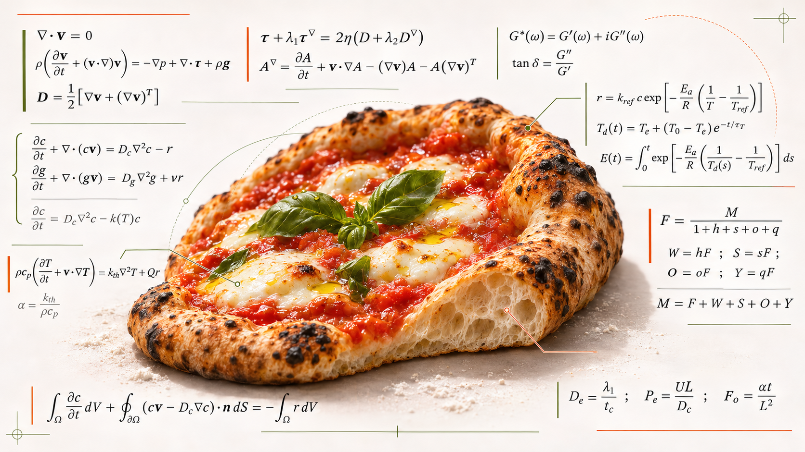
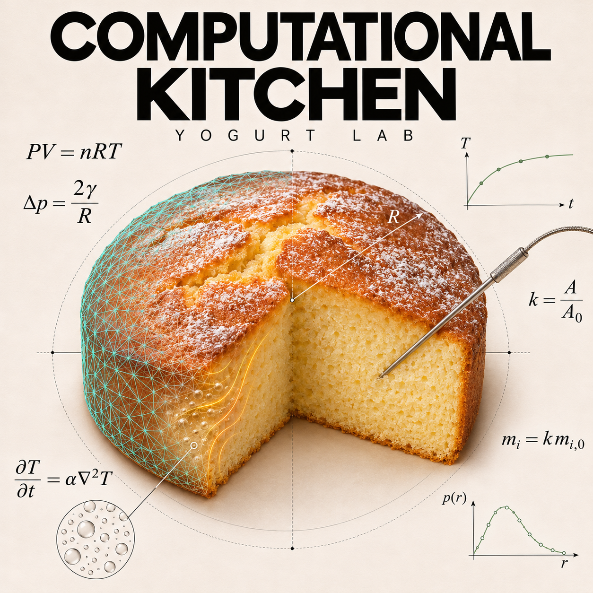

EXPERIMENT / 01
Pizza Computational Lab
From the first mix to the first bake. Plan ingredients, explore direct dough, poolish and biga, and give every step its place on the timeline.
Open Pizza Lab→Interface: English / Italian
FLOUR. HEAT. CURIOSITY.
A kitchen for curious minds. Explore pizza dough and yogurt cake through interactive recipes, mathematical models and experiments you can bake.

From the first mix to the first bake. Plan ingredients, explore direct dough, poolish and biga, and give every step its place on the timeline.
Open Pizza Lab→Interface: English / Italian

Look inside the crumb. Compare flours and recipes, explore a dynamic bubble model, record core temperatures and estimate nutrition from cooked weight.
Open Yogurt Lab→Interface: English / Italian
A flour, a mixing time, a pan. Explore what changes in the model before testing it in your kitchen.
Formulas, reference data and model limits are available to inspect. Curiosity works best when the method is visible.
No account or API key. Download a standalone HTML, bake offline and contribute a reproducible experiment on GitHub.
These are exploratory tools, not validated forecasts of fermentation or real cake crumb. Nutrition is estimated, not laboratory-certified. Follow your appliance manual and assess actual baking results. Computational Kitchen is independent of Vorwerk.